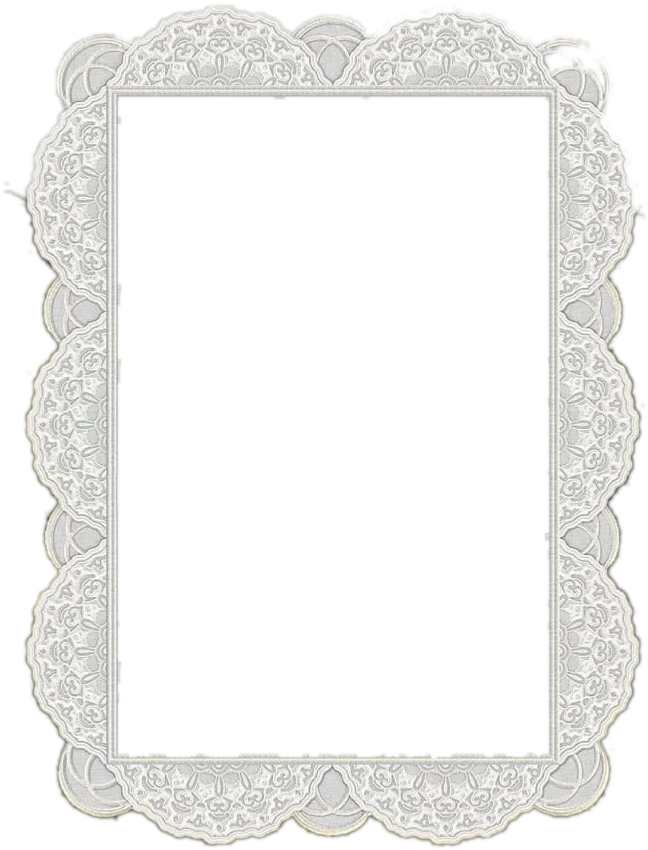

Paloma Ribeiro UGC
Conteúdo que parece espontâneo, pensado pra converter
Construído estrategicamente para gerar identificação e conversão.

Sobre mim
Oiiii, eu sou a Paloma
- Tenho 29 anos
- Criadora de conteúdo UGC.
- Localização
- Praia Grande • SP
- Mãe de dois meninos
- Especialista em conteúdo lifestyle.
- Especialidade
- Skincare, beleza e rotina.
Antes de ligar a câmera eu estudo o produto: o que ele resolve, para quem, e qual é o detalhe que faria alguém parar de rolar o feed. Esse trabalho de bastidor é o que faz o vídeo soar como conversa entre amigas, e não como anúncio. Quando o produto entra assim, no meio da rotina, quem assiste não sente que está sendo vendido. Sente vontade de ter.
Já gravei para marcas grandes daqui e para marcas coreanas de skincare, passando por moda, marketplace e anúncio em vídeo. Em todas, o roteiro sai antes, pensado para o objetivo da campanha. É o que separa o conteúdo bonito do conteúdo que a pessoa lembra, procura e compra.
- Roteiro aprovado antes de gravar. Você lê, comenta e aprova. Nada é gravado na surpresa.
- Uma rodada de ajuste inclusa. Se algo não ficou do jeito que a marca precisa, eu refaço sem custo extra.
- Entrega em até 72 horas úteis. Do aceite do roteiro ao arquivo final na sua mão.
Paloma Ribeiro
- Marcas nacionais & internacionais
- + 12 parcerias recorrentes
- + de 1 ano criando UGC
Marcas que já criaram comigo
Os três que mais performaram
Algum deles já passou no seu feed?
Três produtos diferentes, três formatos diferentes, e os três funcionaram.
Eu leio o produto antes de gravar e escolho o formato que conecta ele com o público. Com o seu não é diferente: existe um formato certo para ele, e achar esse formato é o meu trabalho.
Passe o mouse ou deslize.
Trabalhos por nicho
O que eu já gravei
Os vídeos rodam aqui sem som. Clique em qualquer um para abrir com o áudio.
Como eu te ajudo
Seis formas de trabalhar comigo
Bora criar juntos
Me conta da sua marca
CidadePraia Grande
WhatsApp(13) 99777-8507
E-mailpaalomazevedo@gmail.com
Instagram@paalomaribeiro